청소년상담사-2급(1교시) (2023-09-23 기출문제)
1과목: 청소년 상담의 이론과 실제
1. 다음 사례에서 내담자가 사용하는 방어기제는?
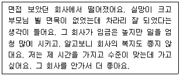
- 합리화
- 억압
- 퇴행
- 치환
- 승화
(정답률: 93%)
2. 다음 상담사례에 나타난 청상이의 부적응 문제 분류로 옳은 것은?
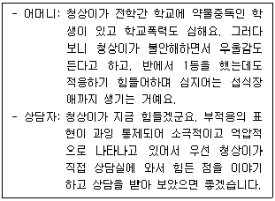
- 통계적 문제
- 내재화 문제
- 외현화 문제
- 수동적 문제
- 공격적 문제
(정답률: 79%)
3. 인간중심 상담이론에서 '충분히 기능하는 사람'에 대한 특징으로 옳은 것을 모두 고른 것은?
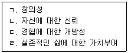
- ㄱ, ㄴ, ㄷ
- ㄱ, ㄴ, ㄹ
- ㄱ, ㄷ, ㄹ
- ㄴ, ㄷ, ㄹ
- ㄱ, ㄴ, ㄷ, ㄹ
(정답률: 61%)
4. 교류분석 상담 과정을 순서대로 연결한 것으로 옳은 것은?
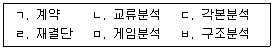
- ㄱ → ㄴ → ㄷ → ㄹ → ㅁ → ㅂ
- ㄱ → ㄷ → ㄴ → ㅁ → ㅂ → ㄹ
- ㄱ → ㅁ → ㄷ → ㅂ → ㄴ → ㄹ
- ㄱ → ㅂ → ㄴ → ㅁ → ㄷ → ㄹ
- ㄱ → ㅂ → ㄷ → ㄴ → ㅁ → ㄹ
(정답률: 64%)
5. 얄롬(I. Yalom)이 제안한 실존적 조건의 궁극적 관심사로 옳지 않은 것은?
- 고독(소외)
- 자유
- 의지
- 죽음
- 무의미
(정답률: 66%)
6. 다음 사례에서 내담자가 보이는 접촉경계혼란은?
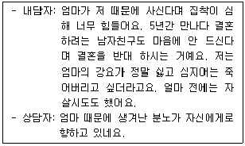
- 내사
- 반전
- 융합
- 투사
- 편향
(정답률: 47%)
7. 행동주의 상담이론에 관한 설명으로 옳지 않은 것은?
- 행동은 강화와 모방을 통해 학습된다고 본다.
- 인간의 행동은 환경과의 상호작용에 의해 이루어진다고 본다.
- 실험적 연구에서 밝혀진 학습원리를 심리치료에 응용한 것이다.
- 환경론을 강조하고 비합리적 충동적 욕구도 후천적인 조건화의 결과로 본다.
- 이상행동이나 문제행동은 학습경험의 잘못이라고 생각하기 보다 정상에서 이탈된 질환으로 보려고 한다.
(정답률: 73%)
8. 현실치료의 특성으로 옳지 않은 것은?
- 책임을 강조한다.
- 내담자의 변명을 수용한다.
- 정신질환을 인정하지 않는다.
- 내담자의 가치판단을 강조한다.
- 처벌이나 비난은 비효과적이라고 본다.
(정답률: 61%)
9. 여성주의 상담에서 길리건(C. Gilligan)의 주장에 관한 설명으로 옳지 않은 것은?
- 콜버그(L. Kohlberg)의 모형을 '책임의 도덕성'이라 한 반면, 자신의 모형은 '정의의 도덕성'이라고 본다.
- 가설적 상황보다는 실제 상황을 적용하여 여성이 직면하는 도덕적 딜레마를 제시하고자 하였다.
- 정체성 형성에 있어, 전통적인 심리학에서 바라보는 여성들의 관계에 대한 관점을 비평하였다.
- 여성의 착한 면으로 여겨지는 동정심과 돌봄과 같은 특성은 여성의 도덕성 발달에 있어서 불리한 조건으로 작용한다고 보았다.
- 여성의 도덕성이 일반적으로 3단계에 도달하는 반면, 남성의 도덕성이 4단계에 도달한다는 결과는 여성의 결함이 아니라 콜버그 이론의 결함이라고 주장한다.
(정답률: 45%)
10. 다음 사례에서 나타난 청소년기 사고의 특징을 나타내는 개념은?
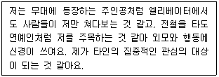
- 개인적 우화
- 상상적 청중
- 구체적 사고
- 절대적 사고
- 과업지향적 사고
(정답률: 85%)
11. ( )에 들어 갈 학자가 순서대로 연결된 것으로 옳은 것은?
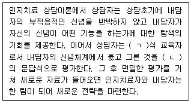
- ㄱ: 흄, ㄴ: 칸트
- ㄱ: 지라르, ㄴ: 가다머
- ㄱ: 레비나스, ㄴ: 플라톤
- ㄱ: 소크라테스, ㄴ: 소크라테스
- ㄱ: 아르키메데스, ㄴ: 아리스토텔레스
(정답률: 84%)
12. 엘리스(A. Ellis)의 합리정서행동상담에 관한 설명으로 옳지 않은 것은?
- 스토아 학파에서 근원을 찾을 수 있다.
- 고대 로마의 에픽테투스(Epictetus) 사상의 영향을 받았다.
- 인간의 삶에 혼란을 가져올 수 있는 비합리적 신념에 주목한다.
- 내담자 문제는 억압된 미해결 과제가 해소되지 못할 때 발생한다고 본다.
- 철학적 토대에는 '책임을 동반한 쾌락주의', '인본주의', '합리성'의 개념이 포함되어 있다.
(정답률: 77%)
13. 상담의 종결 단계에 관한 설명으로 옳지 않은 것은?
- 종결에 관련된 내담자의 감정을 다룬다.
- 상담을 통해 변화된 행동이 지속되는지 점검한다.
- 종결이후 진행되는 상담을 추수(추후)상담이라고 한다.
- 초기에 설정한 목표가 달성되면 새로운 목표를 설정한다.
- 추수(추후)상담의 진행시기, 횟수 등은 종결 전에 정한다.
(정답률: 78%)
14. 청소년상담의 목표에 관한 설명으로 옳지 않은 것은?
- 청소년을 둘러싼 적절하지 못한 환경을 개선한다.
- 청소년의 잠재 가능성을 찾아 실현할 수 있도록 지원한다.
- 위기청소년들에게는 직접 개입보다 가족역동을 이해할 수 있도록 심리치료를 우선적으로 한다.
- 청소년들이 일상생활에서 직면하는 문제의 해결을 조력한다.
- 경제적, 사회적, 심리적으로 위기에 처한 청소년의 안정적 생활을 지원한다.
(정답률: 77%)
15. 청소년상담사의 전문적 자질에 해당하는 것을 모두 고른 것은?
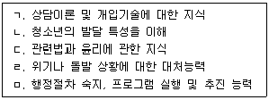
- ㄱ, ㄴ
- ㄷ, ㄹ
- ㄴ, ㄹ, ㅁ
- ㄱ, ㄴ, ㄷ, ㄹ
- ㄱ, ㄴ, ㄷ, ㄹ, ㅁ
(정답률: 80%)
16. 심리검사 실시와 해석에 관한 윤리적 행동으로 옳은 것은?
- 11세 아동에게 본인 동의를 받아 바로 검사를 실시하였다.
- 다문화 배경을 가진 내담자를 위한 검사선택시 내담자의 사회문화적 맥락을 신중히 고려하였다.
- 아는 대학원생의 논문을 위해 6개월 전의 검사결과들을 연구에 제공하였다.
- 내담자에게 적절하지 않지만 상담사가 관심 있는 검사를 사용하였다.
- 상담사가 모르는 검사지만 보호자의 요청으로 실시하고 해석하였다.
(정답률: 86%)
17. 청소년상담사 윤리강령에 따른 상담의 기록과 보관에 관한 설명으로 옳은 것을 모두 고른 것은?
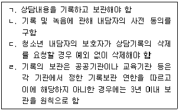
- ㄱ
- ㄱ, ㄴ
- ㄷ, ㄹ
- ㄱ, ㄴ, ㄹ
- ㄱ, ㄴ, ㄷ, ㄹ
(정답률: 70%)
18. 대면 접수면접에서 다루는 내용에 해당하지 않는 것은?
- 기본정보 파악
- 호소문제 탐색
- 가족정보 파악
- 태도와 행동 관찰
- 통찰 촉진을 위한 직면
(정답률: 82%)
19. 상담시간에 계속 지각하는 고2 내담자 A에게 상담자가 사용한 상담기술에 관한 설명으로 옳지 않은 것은?
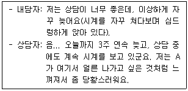
- 내담자로 하여금 다른 관점으로 문제를 볼 수 있도록 행동, 사고, 감정에 새로운 의미를 제공한다.
- 내담자의 경험, 행동, 사고에 대한 상담자의 경험 또는 감정을 구두로 전달하는 것이다.
- 내담자의 자기탐색을 촉진하고 내담자 또는 관계에 초점을 유지하기 위해 사용한다.
- 상담회기 중 특정 사건, 내담자에 대한 상담자 반응에 초점을 맞출 수 있다.
- 상담자들은 종종 이 반응이 내담자를 화나게 만들지 않을까 걱정하기도 한다.
(정답률: 43%)
20. 다음에서 사용된 상담기술은 무엇인가?
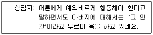
- 재진술
- 해석
- 직면
- 자기개방
- 정보제공
(정답률: 84%)
21. 또래와의 갈등으로 삶이 불행하다고 호소하는 17세 내담자에게 상담자는 '유쾌하거나 불쾌했던 상황을 상상해 보도록 하고, 그 이미지에 동반되는 감정들을 살펴보게 한 후, 어떤 감정을 선택할 것인지를 자신이 결정할 수 있음'을 알게 했다. 상담자가 사용한 기법은?
- 즉시성
- 수렁 피하기
- 단추 누르기
- 스프에 침 뱉기
- 마치 ∼인 것처럼 행동하기
(정답률: 65%)
22. 사이버상담에 관한 설명으로 옳지 않은 것은?
- 익명성이 있다.
- 매체상담의 하나이다.
- 상담자가 적극적으로 자기를 개방하게 된다.
- 스마트기기 및 인터넷 환경의 발달로 더욱 활발해졌다.
- 내담자가 자신의 정보를 제공하지 않고도 상담이 가능하다.
(정답률: 74%)
23. 지역사회 청소년통합지원체계(CYS-Net)에 관한 설명으로 옳지 않은 것은?
- 이 체계는「청소년 보호법」제4장에 규정되어 있다.
- 필수연계기관에 지방고용노동청 및 지청이 포함되어 있다.
- 지역사회기반으로 통합서비스를 제공하기 위한 시스템이다.
- 위기청소년을 지원하기 위한 자발적인 지역주민모임이 있다.
- '위기청소년 발견', '상담개입', '통합서비스 제공'이라는 세 가지 운영 모듈을 가지고 있다.
(정답률: 46%)
24. 청소년 내담자 A와의 대화에서 상담자가 공통적으로 사용한 상담기술은?
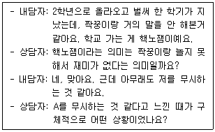
- 반영
- 명료화
- 요약
- 공감
- 앵무새 말하기
(정답률: 79%)
25. 다음에서 상담자가 사용한 기법은?
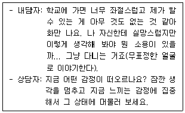
- 꿈 작업
- 언어 자각
- 빈 의자 기법
- 역할 연기하기
- 현재 감정 및 신체의 자각
(정답률: 85%)
2과목: 상담연구방법론의 기초
26. '동일한 여건 하에서 다른 연구자가 동일한 연구방법으로 연구를 수행하면 동일한 결론을 얻을 수 있어야 한다'는 진술이 나타내는 과학적 연구의 특징은?
- 결정론적(deterministic)이다.
- 논리적(logical)이다.
- 간결성(parsimony)이 있어야 한다.
- 일반화(generalization)를 목적으로 해야 한다.
- 간주관성(inter-subjectivity)이 있어야 한다.
(정답률: 43%)
27. 연구 보고서에서 연구 대상, 자료 수집, 측정을 상세히 기술하는 부분은?
- 서론
- 이론적 배경
- 연구방법
- 연구결과
- 결론 및 논의
(정답률: 75%)
28. 과학으로서의 상담학 연구에 관한 설명으로 옳은 것을 모두 고른 것은?
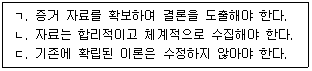
- ㄱ
- ㄷ
- ㄱ, ㄴ
- ㄴ, ㄷ
- ㄱ, ㄴ, ㄷ
(정답률: 71%)
29. 조작적 정의에 관한 설명으로 옳은 것은?
- 행위자가 행위에 부여한 의미를 정의하는 과정이다.
- 연구자의 주관성이 강하게 개입하는 과정이다.
- 개념을 구성하는 하위요인을 이론적으로 밝히는 과정이다.
- 구체적인 관찰의 대상을 연역적으로 추상화하는 과정이다.
- 다양한 속성의 측정을 위해 복수지표가 활용될 수 있다.
(정답률: 30%)

30. 가설 및 가설검정에 관한 설명으로 옳은 것을 모두 고른 것은?
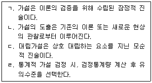
- ㄱ
- ㄷ
- ㄱ, ㄴ
- ㄴ, ㄷ
- ㄱ, ㄴ, ㄷ
(정답률: 45%)
31. 다음에 나타난 표본추출기법은?
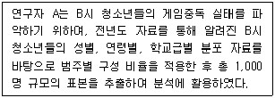
- 할당표본추출법
- 집락표본추출법
- 단순무작위표본추출법
- 누적표본추출법
- 편의표본추출법
(정답률: 48%)
32. 척도에 관한 설명으로 옳은 것은?
- 측정하고자 하는 속성에 절대 영점이 존재할 경우 비율척도 활용은 불가능하다.
- 비율척도를 이용하여 평균과 표준편차를 구할 수 있다.
- 서열척도에서 측정값들 간의 간격은 동일하다.
- 연구대상의 거주지역 변수에 임의로 수치를 부여하는 것은 서열척도에 해당한다.
- 하나의 속성에는 하나의 척도만이 가능하다.
(정답률: 53%)
33. 양적연구에 관한 일반적 설명으로 옳은 것은?
- 분석결과의 일반화 가능성을 중시한다.
- 심층적 기술을 바탕으로 특정 사례에 대한 이해를 시도한다.
- 문헌속 내용이 갖는 시ㆍ공간적 의미에 대한 해석을 중시한다.
- 연구대상의 행위가 발생한 독특한 맥락에 주목한다.
- 개별 사례가 갖는 독자성과 주관적 의미를 강조한다.
(정답률: 72%)
34. 다음 연구에 관한 설명으로 옳은 것은?
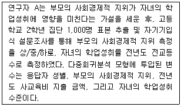
- 자녀의 학업성취는 독립변수이다.
- 응답자 성별은 종속변수이다.
- 가설에서 독립변수는 등간척도로 측정되었다.
- 가설에서 종속변수는 서열척도로 측정되었다.
- 전년도 사교육비 지출 금액은 매개변수이다.
(정답률: 45%)
35. 준거 관련 타당도(criterion-related validity)에 해당하는 것들로만 옳게 묶인 것은?
- 공존(concurrent)타당도, 예측(predictive)타당도
- 예측(predictive)타당도, 내용(content)타당도
- 내용(content)타당도, 수렴(convergent)타당도
- 수렴(convergent)타당도, 판별(discriminant)타당도
- 판별(discriminant)타당도, 공존(concurrent)타당도
(정답률: 37%)
36. 내적 일관성(internal consistency)을 판단하는 신뢰도 측정 방법을 모두 고른 것은?
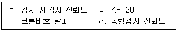
- ㄱ, ㄴ
- ㄱ, ㄷ
- ㄱ, ㄹ
- ㄴ, ㄷ
- ㄷ, ㄹ
(정답률: 48%)
37. 외적 타당도에 관한 설명으로 옳지 않은 것은?
- 연구 결과를 일반화 시킬 수 있는 정도를 의미한다.
- 확률표집보다 비확률표집을 사용할 때 외적 타당도가 높다.
- 표본 특성이 모집단과 유사하면 외적 타당도가 높다.
- 표본의 크기가 클수록 외적 타당도가 높다.
- 연구 환경이 현실과 유사할수록 외적 타당도가 높다.
(정답률: 50%)
38. 측정의 신뢰도와 타당도에 관한 설명으로 옳지 않은 것은?
- 신뢰도란 측정하고자 하는 현상이나 대상을 일관성 있게 측정하는 정도를 의미한다.
- 타당도란 측정하고자 하는 개념을 정확하게 측정하는 정도를 의미한다.
- 요인분석을 통해 타당도를 평가할 수 있다.
- 판별분석을 통해 신뢰도를 평가할 수 있다.
- 문항들의 내용이 유사할수록 신뢰도가 증가한다.
(정답률: 49%)
39. 통계적 가설검정에 관한 설명으로 옳은 것을 모두 고른 것은?
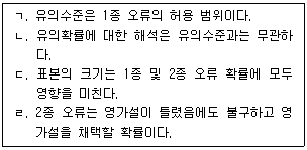
- ㄱ, ㄴ
- ㄴ, ㄷ
- ㄱ, ㄴ, ㄹ
- ㄱ, ㄷ, ㄹ
- ㄱ, ㄴ, ㄷ, ㄹ
(정답률: 54%)
40. 다음 분산분석(ANOVA) 결과에 관한 설명으로 옳지 않은 것은?
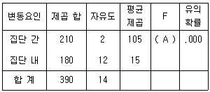
- 영가설은 '모든 집단의 평균은 같다'이다.
- 분석에 투입된 집단의 수는 3개이다.
- 분석결과, 유의수준 .⑤에서 영가설을 기각할 수 있다.
- 분석에 투입된 총 사례 수는 14이다.
- A는 7이다.
(정답률: 37%)
41. 다음 사례에 나타난 실험설계의 내적타당도를 저해하는 변인은?
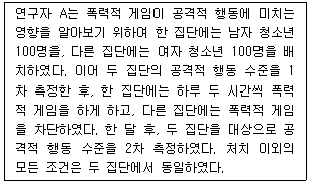
- 표본선택의 오류(selection bias)
- 실험대상의 탈락(mortality)
- 성숙(maturation)
- 통계적 회귀(statistical regression)
- 우연적 사건(history)
(정답률: 54%)
42. 사전-사후 측정 통제집단 설계에 관한 설명으로 옳은 것을 모두 고른 것은?
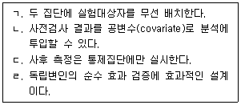
- ㄱ, ㄴ
- ㄴ, ㄷ
- ㄱ, ㄴ, ㄹ
- ㄱ, ㄷ, ㄹ
- ㄱ, ㄴ, ㄷ, ㄹ
(정답률: 53%)
43. 변수 X와 Y간 피어슨(Pearson) 적률상관계수에 관한 설명으로 옳은 것을 모두 고른 것은?
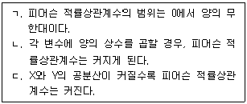
- ㄴ
- ㄷ
- ㄱ, ㄴ
- ㄱ, ㄷ
- ㄱ, ㄴ, ㄷ
(정답률: 25%)
44. 단순회귀 모형 Yi = b0 + b1Xi + εi와 결정계수 R2에 관한 설명으로 옳지 않은 것은?
- R2 값은 X에 의해 설명되는 Y분산의 비율을 의미한다.
- b1은 독립변수 X가 한 단위 변화할 때 Y가 변화하는 양이다.
- ε의 기댓값은 0이다.
- 1에 가까운 R2 값은 X와 Y간 인과관계의 충분조건이 된다.
- b0는 X가 0일 때 Y의 값이다.
(정답률: 32%)
45. 다음 표는 중학생과 고등학생들이 선호하는 상담기법의 차이를 보여준다. B 상담기법을 선호하는 중학생과 고등학생의 기대빈도의 합은?
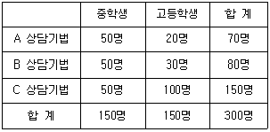
- 70
- 75
- 80
- 110
- 150
(정답률: 62%)
46. 다음에 나타난 연구패러다임에 관한 설명으로 옳지 않은 것은?
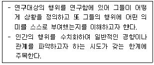
- 탐구과정에서 연구자의 가치개입을 허락한다.
- 실재의 객관성을 중시한다.
- 참여관찰이나 인터뷰기법이 주로 활용된다.
- 연구자와 연구대상간의 상호작용을 중시한다.
- 연구대상간의 비공식적 언어에 주목한다.
(정답률: 56%)
47. 합의적 질적 연구법에서 사용되는 분석 절차에 해당하지 않는 것은?
- 영역 코딩
- 중심개념 코딩
- 교차 분석(cross check)
- 연계 분석(sequential analysis)
- 감사(audit)
(정답률: 25%)
48. 근거이론 방법론을 활용한 연구에서 사용하는 일반적인 코딩의 순서는?
- 축코딩-개방코딩 –선택코딩
- 축코딩-선택코딩 –개방코딩
- 선택코딩-개방코딩-축코딩
- 개방코딩-선택코딩-축코딩
- 개방코딩-축코딩 -선택코딩
(정답률: 38%)
49. 이미 출판된 자신의 저작물의 전부 또는 일부를 정확한 출처 및 인용 표시 없이 새로운 자신의 저작물로 출판하는 것은?
- 위조
- 변조
- 부당한 저자 표기
- 기만
- 중복게재(중복출판)
(정답률: 58%)
50. 인간 대상 연구의 윤리적 원칙을 다룬 벨몬트 보고서(The Belmont Report)에서 제시한 3가지 윤리적 원칙을 모두 고른 것은?
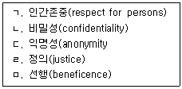
- ㄱ, ㄴ, ㄷ
- ㄱ, ㄷ, ㄹ
- ㄱ, ㄹ, ㅁ
- ㄴ, ㄷ, ㅁ
- ㄴ, ㄹ, ㅁ
(정답률: 52%)
3과목: 심리측정 평가의 활용
51. 심리검사에 관한 설명으로 옳지 않은 것은?
- 심리평가를 위한 자료원이다.
- 전체 행동이 아니라 표집된 행동으로 구성된다.
- 심리적 구성개념을 직접 관찰하기 위한 도구이다.
- 표준화된 방식으로 심리적 구성개념을 측정한다.
- 검사를 통해 내려지는 결론은 항상 오류가능성을 내포한다.
(정답률: 44%)
52. 웩슬러(D. Wechsler)가 초기 지능검사를 개발할 때 사용한 개념으로서 해당 연령집단 내에서 상대적인 위치를 IQ로 환산하는 것은?
- 비율 IQ
- 평균 IQ
- 편차 IQ
- 오차 IQ
- 규준 IQ
(정답률: 47%)
53. 종합체계 방식에서 엑스너(J. Exner)가 이전의 접근방식들을 통합할 때 적용한 기준으로 옳은 것은?
- 신경심리학적으로 유용한지 여부를 강조하였다.
- 로샤(H. Rorschach)의 전통적 채점 방식을 유지하는 데 초점을 두었다.
- 정량적인 분석보다 정성적인 분석을 더 강조하였다.
- 경험적으로 근거를 가지고 실증되었는가에 초점을 두었다.
- 정신분석적으로 해석가능한지 여부를 강조하였다.
(정답률: 43%)
54. 심리평가를 위한 면담에 관한 설명으로 옳은 것은?
- 심리검사보다 비구조화되어 신뢰도가 높다.
- SCID(Structured Clinical Interview for DSM)는 반구조화된 면담도구이다.
- 심리검사보다 수집할 수 있는 정보의 한계가 더 뚜렷하다.
- 행동관찰보다 '지금-여기'에 해당하는 정보를 더 많이 수집한다.
- 일반적인 대화처럼 목표를 두지 않고 편안하게 진행된다.
(정답률: 48%)
55. 웩슬러(D. Wechsler)가 검사배터리를 처음 개발할 당시에 문항을 차용한 도구를 모두 고른 것은?
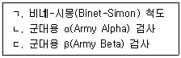
- ㄱ
- ㄱ, ㄴ
- ㄱ, ㄷ
- ㄴ, ㄷ
- ㄱ, ㄴ, ㄷ
(정답률: 44%)
56. 행동관찰에서 사용되는 기록방법 가운데 '이야기식 기록'에 관한 설명으로 옳은 것을 모두 고른 것은?
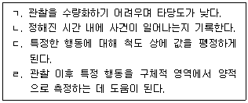
- ㄱ
- ㄴ
- ㄱ, ㄹ
- ㄴ, ㄷ
- ㄷ, ㄹ
(정답률: 33%)
57. 벤더도형검사 2판(BGT-II)에 관한 설명으로 옳지 않은 것은?
- 아동과 성인에게 모두 실시할 수 있다.
- 지각-운동 기능을 평가할 수 있다.
- 1판에 비해 난이도가 높은 7개의 도형들이 추가되었다.
- 기질적 뇌장애로 해석할 수 있는 특정한 반응들이 구체화되어 있다.
- 항목별 5점 척도로 평정하는 채점 체계를 갖추었다.
(정답률: 40%)
58. 신경심리검사에서 레이-오스테리스 복합도형(Rey-Osterrieth complex figure)을 활용하여 평가할 수 있는 인지기능으로 옳지 않은 것은?
- 지각능력
- 시각주의력
- 시각기억력
- 구성능력
- 범주유창성
(정답률: 61%)
59. 로샤(Rorschach)검사에서 나타난 아래 반응들 중 종합체계 방식에서 반응 내용으로 'Hh'가 부여되는 것은?
- “밤하늘 불꽃놀이가 보여요.”
- “태양이 환하네요.”
- “램프 안에 불이 타올라요.”
- “비행기가 발사되네요.”
- “엑스레이 사진 같아요.”
(정답률: 40%)
60. 로샤(Rorschach)검사 구조적 요약에서 람다(L; Lamda) 값이 시사하는 것으로 옳은 것은?
- 경험에 대한 개방성 수준
- 사람에 대한 관심의 정도
- 최근 스트레스를 경험한 정도
- 정서를 조절하고 표현하는 경향
- 방어전략으로 주지화를 사용하는 정도
(정답률: 39%)
61. 각 검사별 실시 방법으로 옳지 않은 것은?
- 로샤(Rorschach)검사: 연상 단계에서 반응 수가 14개 이하이면 질문단계가 아닌, 한계검증단계로 넘어간다.
- 로샤(Rorschach)검사: 질문단계는 반응의 영역, 결정인 및 내용을 확인하는 데 초점을 두고 진행한다.
- 주제통각검사(TAT): 전체 카드 가운데 수검자의 성별과 연령을 고려하여 일부 카드를 선정하여 실시한다.
- 문장완성검사(SCT): 제한 시간은 없으나, 가능한 빨리 문장을 완성하도록 지시한다.
- 집-나무-사람(HTP) 검사: 나무를 그리는 단계에서는 종이를 세로로 제시한다.
(정답률: 49%)
62. 머레이(H. Murray)는 주제통각검사(TAT)의 수검자 반응을 ( ㄱ )과(와) ( ㄴ )의 측면에서 분석하는 해석체계를 제시하였다. ( )에 들어갈 내용으로 옳은 것은?
- ㄱ: 동일시, ㄴ: 투사
- ㄱ: 주인공, ㄴ: 내용
- ㄱ: 콤플렉스, ㄴ: 대처
- ㄱ: 갈등, ㄴ: 방어
- ㄱ: 욕구, ㄴ: 압력
(정답률: 49%)
63. 로샤(Rorschach)검사 구조적 요약의 소외지표(Isolation Index)에 관한 설명으로 옳은 것은?
- 지표를 계산할 때 순수형태 반응의 수가 필요하다.
- 식물, 구름, 지도, 풍경, 자연의 다섯 가지 범주들의 반응 수가 지표 계산에 사용된다.
- 현실을 지각할 때 왜곡되어 있는 정도를 알려준다.
- 자살지표(S-CON)를 구성하는 요소이다.
- 구조적 요약 가운데 자기지각 영역에 포함된다.
(정답률: 40%)
64. 심리검사 도구와 평가목적의 연결이 옳지 않은 것은?
- K-WISC-V: 지능 및 인지능력
- MMPI-2: 주요 정신병리
- Rorschach: 지각 및 통각과정
- NEO-PI: 16가지 성격차원
- TAT: 대인관계의 역동
(정답률: 42%)
65. 습관적 수행(typical performance)을 측정하는 검사로 옳지 않은 것은?
- 직업적성검사
- 스트롱-켐벨(Strong-Campbell) 흥미검사
- 카텔(R. Cattell)의 16PF
- PAI
- MMPI-A
(정답률: 36%)
66. 심리검사 제작 단계를 순서대로 옳게 나열한 것은?
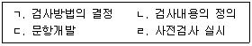
- ㄱ → ㄴ → ㄷ → ㄹ
- ㄱ → ㄷ → ㄴ → ㄹ
- ㄱ → ㄹ → ㄷ → ㄴ
- ㄴ → ㄱ → ㄷ → ㄹ
- ㄴ → ㄷ → ㄱ → ㄹ
(정답률: 56%)
67. IQ 분포와 T 점수 분포의 값들을 비교한 것으로 옳은 것은?
- IQ 115의 상대적 위치는 T 점수 65와 같다.
- T 점수 70은 IQ 120의 백분위와 같다.
- IQ 70과 T 점수 30의 백분위는 같다.
- T 점수 40의 상대적 위치는 IQ 90과 같다.
- IQ 85는 T 점수 50의 백분위와 같다.
(정답률: 34%)
68. 고등학생 A는 자아존중감 검사에서 70점을 받았다. 이 검사를 받은 집단의 평균이 60, 표준편차가 10인 정규분포를 이루고 있다. 고등학생 A의 점수에 관한 설명으로 옳은 것은?
- A의 점수에 해당하는 Z 점수는 +1.5 이다.
- A의 점수에 해당하는 T 점수는 60이다.
- A의 점수에 해당하는 백분위는 75이다.
- A 보다 높은 점수를 받은 사람의 비율은 25%이다.
- A의 점수의 신뢰도 구간은 60 ∼ 80점이다.
(정답률: 35%)
69. K-WAIS-IV에 관한 설명으로 옳지 않은 것은?
- 공통성 소검사는 언어적 이해능력을 측정한다.
- 숫자 소검사는 주의 집중력을 측정한다.
- 지우기 소검사는 선택적 주의력을 측정한다.
- 기호쓰기 소검사는 시각-운동 기민성을 측정한다.
- 행렬추론 소검사는 결정성 지능(crystallized intelligence)을 측정한다.
(정답률: 50%)
70. K-WISC-IV에서 동형찾기 소검사가 측정하는 능력으로 옳지 않은 것은?
- 주의력
- 시각적 추론능력
- 시각 판별력
- 시각적 단기기억
- 시각-운동 협응능력
(정답률: 42%)
71. K-WISC-IV에 관한 설명으로 옳은 것을 모두 고른 것은?
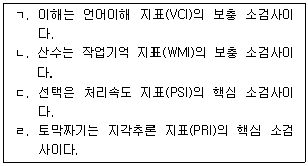
- ㄱ, ㄴ
- ㄱ, ㄷ
- ㄴ, ㄷ
- ㄴ, ㄹ
- ㄷ, ㄹ
(정답률: 36%)
72. PAI 심리검사에서 대인관계 척도로 옳은 것은?
- 지배성(DOM)
- 공격성(AGG)
- 반사회적 특징(ANT)
- 긍정적 인상(PIM)
- 우울(DEP)
(정답률: 45%)
73. MMPI-2에서 F(B) 척도에 관한 설명으로 옳은 것을 모두 고른 것은?
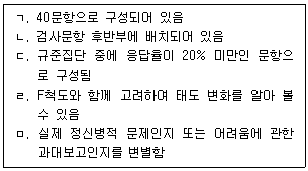
- ㄱ, ㄴ, ㄷ
- ㄱ, ㄴ, ㄹ
- ㄴ, ㄷ, ㄹ
- ㄷ, ㄹ, ㅁ
- ㄱ, ㄴ, ㄹ, ㅁ
(정답률: 26%)
74. 다음 증상들과 연관된 MMPI-2의 임상척도로 옳은 것은?
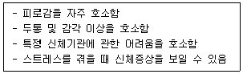
- 건강염려증(Hs)
- 강박증(Pt)
- 반사회성(Pd)
- 내향성(Si)
- 편집증(Pa)
(정답률: 72%)
75. 다음의 특성을 모두 포함하는 MMPI-2의 해리스-링고스(Harris-Lingoes) 소척도로 옳은 것은?
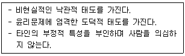
- Sc3
- Sc4
- Ma4
- Pa2
- Pa3
(정답률: 37%)
4과목: 이상심리
76. 다음에서 설명하고 있는 이상심리학적 관점은?
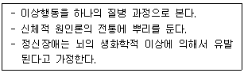
- 생물학(의학)적 관점
- 정신분석적 관점
- 인지적 관점
- 행동적 관점
- 현실치료적 관점
(정답률: 72%)
77. 정상과 이상을 구분하는 기준으로 옳은 것을 모두 고른 것은?
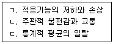
- ㄱ
- ㄴ
- ㄱ, ㄷ
- ㄴ, ㄷ
- ㄱ, ㄴ, ㄷ
(정답률: 64%)
78. 정신장애의 평가 및 분류체계에 관한 설명으로 옳은 것은?
- 이상행동에 대한 현대식 분류체계는 프로이트(S. Freud)에 의해 고안되었다.
- 미국 정신의학회(APA)는 ICD 체계를 개발하였다.
- 세계보건기구(WHO)는 DSM 체계를 개발하였다.
- DSM-5는 기존에 사용하던 다축체계를 더욱 체계화하였다.
- 분류체계는 정신장애를 치료하는 의사나 연구자들 간 소통에 도움을 주어 불필요한 혼란과 모호함을 감소시켜 준다.
(정답률: 64%)
79. 다음 설명에 해당하는 DSM-5의 장애는?
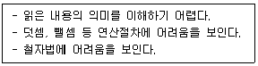
- 과잉행동장애
- 특정학습장애
- 틱장애
- 해리성 기억상실
- 양극성장애
(정답률: 70%)
80. DSM-5의 신경발달장애에 해당하지 않는 것은?
- 의사소통장애
- 지적장애
- 이식증
- 주의력결핍 및 과잉행동장애
- 운동장애
(정답률: 66%)
81. DSM-5의 우울장애에 관한 내용으로 옳지 않은 것은?
- 월경전불쾌감장애는 월경이 시작되기 1주 전에 여러 가지 우울증상이 나타난다.
- 주요우울장애는 우울한 기분 또는 흥미나 즐거움의 상실 증상이 필수적이다.
- 지속성 우울장애는 적어도 2년 동안 하루의 대부분 우울한 기분이 있으며, 증상 없는 기간이 2개월 이상 지속되지 않는다.
- 우울장애는 양극성장애와 같은 범주로 묶인다.
- 파괴적 기분조절부전장애의 주요 특징은 만성적인 고도의 지속적 과민성이다.
(정답률: 56%)
82. DSM-5의 조현병 진단기준에 해당하는 것을 모두 고른 것은?
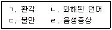
- ㄱ, ㄷ
- ㄴ, ㄹ
- ㄱ, ㄴ, ㄷ
- ㄱ, ㄴ, ㄹ
- ㄱ, ㄴ, ㄷ, ㄹ
(정답률: 63%)
83. DSM-5의 주요우울장애에 관한 내용으로 옳은 것을 모두 고른 것은?
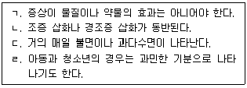
- ㄱ, ㄴ
- ㄴ, ㄷ
- ㄱ, ㄷ, ㄹ
- ㄴ, ㄷ, ㄹ
- ㄱ, ㄴ, ㄷ, ㄹ
(정답률: 55%)
84. DSM-5의 불안장애 하위범주에 해당하지 않는 것은?
- 강박장애
- 분리불안장애
- 선택적 함구증
- 공황장애
- 광장공포증
(정답률: 55%)
85. DSM-5의 제II형 양극성장애에 관한 내용으로 옳지 않은 것은?
- 1회 이상의 주요우울 삽화와 경조증 삽화가 있어야 한다.
- 목표지향적 활동이 증가되면서 수면욕구가 늘어난다.
- 고양되거나 과민한 기분이 최소 4일 이상 지속된다.
- 평소보다 말이 많아진다.
- 조증 삽화는 1회도 없어야 한다.
(정답률: 47%)
86. DSM-5의 범불안장애에 관한 내용으로 옳지 않은 것은?
- 핵심적 특징은 수많은 사건이나 활동에 대한 과도한 불안과 걱정이다.
- 불안과 걱정의 정도, 기간, 빈도는 예상되는 사건이 미치는 실제 영향에 비해 과도하다.
- 일상생활에 대해서 지나치게 불안해하거나 걱정하는 기간이 최소 6개월 이상이다.
- 특정 대상이나 상황에 대하여 극심한 공포나 불안이 유발된다.
- 직업이나 건강, 재정, 사소한 문제와 같은 일상생활 환경에 대해 걱정한다.
(정답률: 60%)
87. 다음 사례에 해당하는 DSM-5의 진단명은?
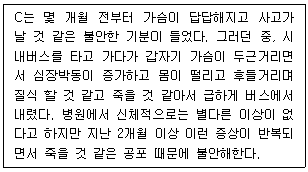
- 파괴적 기분조절부전장애
- 외상후 스트레스장애
- 광장공포증
- 공황장애
- 강박장애
(정답률: 72%)
88. DSM-5의 강박 및 관련 장애에 해당하지 않는 것은?
- 신체이형(변형)장애
- 수집광(저장장애)
- 피부뜯기(벗기기)장애
- 반추장애
- 다른 의학적 상태로 인한 강박 및 관련 장애
(정답률: 51%)
89. DSM-5의 해리성 기억상실에 관한 내용으로 옳은 것을 모두 고른 것은?
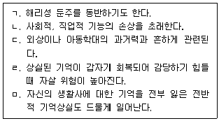
- ㄱ, ㅁ
- ㄱ, ㄴ, ㅁ
- ㄴ, ㄷ, ㄹ
- ㄱ, ㄴ, ㄷ, ㄹ
- ㄱ, ㄴ, ㄷ, ㄹ, ㅁ
(정답률: 62%)
90. DSM-5의 악몽장애에 관한 내용으로 옳지 않은 것은?
- 남성이 여성에 비해 더 많이 나타난다.
- 악몽이 발생한 빈도에 따라 심각도를 구분한다.
- 불쾌한 꿈에서 깨면 빠르게 지남력을 회복한다.
- 청소년기 후기나 성인기 초기에 유병률이 가장 높다.
- 주로 생존이나 안전을 위협하는 내용과 관련된 악몽을 꾼다.
(정답률: 35%)
91. DSM-5의 경도 신경인지장애에 관한 내용으로 옳지 않은 것은?
- 장애의 원인은 주요 신경인지장애와 동일하다.
- 경도의 인지 손상이 일상생활의 독립적 능력을 방해한다.
- 표준화된 신경심리검사에 의해서 경도의 인지 손상이 입증될 수 있다.
- 경도의 인지 저하는 자신 또는 잘 아는 지인에 의해 인식될 수 있다.
- 하나 이상의 인지 영역에서 이전에 비해 경도의 저하가 나타난다.
(정답률: 33%)
92. DSM-5의 조현성 성격장애에 관한 내용으로 옳지 않은 것은?
- 타인의 칭찬이나 비난에 무관심하다.
- 대부분 혼자서 하는 활동을 선택한다.
- 정서적으로 냉담하고 감정표현이 제한되어 있다.
- 대인관계를 원하지만 사회적 기술이 부족하여 고립된다.
- 아동기나 청소년기에 외톨이, 학습부진 등의 양상을 보인다.
(정답률: 61%)
93. DSM-5에서 물질중독을 일으키지 않지만 물질사용장애와 물질금단을 일으키는 것은?
- 카페인
- 알코올
- 담배(tobacco)
- 대마(cannabis)
- 펜사이클리딘(phencyclidine)
(정답률: 39%)
94. DSM-5의 신경성 식욕부진증에 관한 내용으로 옳은 것을 모두 고른 것은?
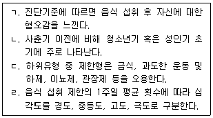
- ㄱ
- ㄴ
- ㄱ, ㄷ
- ㄴ, ㄷ, ㄹ
- ㄱ, ㄴ, ㄷ, ㄹ
(정답률: 20%)
95. DSM-5의 성도착장애(변태성욕장애)에 관한 내용으로 옳은 것을 모두 고른 것은?
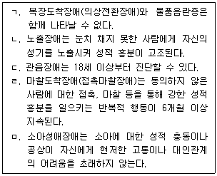
- ㄱ, ㄴ, ㄷ
- ㄱ, ㄷ, ㄹ
- ㄴ, ㄷ, ㄹ
- ㄴ, ㄹ, ㅁ
- ㄱ, ㄷ, ㄹ, ㅁ
(정답률: 43%)
96. DSM-5의 의존성 성격장애에 관한 내용으로 옳은 것은?
- 피암시성이 높아서 환경에 의해 쉽게 영향을 받는다.
- 자신의 능력을 스스로 과소평가한다.
- 낡고 가치 없는 물건을 버리지 못하고 계속 간직한다.
- 동기나 활력이 부족해서 일을 혼자서 시작하거나 수행하기 어렵다.
- 친밀한 관계가 끝났을 때 그 사람과 관계를 지속하기 위해 더 의존하게 된다.
(정답률: 38%)
97. DSM-5의 파괴적, 충동조절 및 품행장애에 관한 내용으로 옳은 것은?
- 병적 방화(방화광)는 방화를 하기 위해 사전에 충분한 준비를 한다.
- 병적 도벽은 보통 청소년기에 시작되며 훔치고 난 후 긴장감이 고조된다.
- 간헐적 폭발장애는 공격적 행동폭발이 나타날 때 미리 계획을 세운다.
- 품행장애와 적대적 반항장애는 동시에 진단할 수 없다.
- 적대적 반항장애는 증상이 한 가지 상황에서만 나타나기도 하는데 학교에서 문제를 보이는 경우가 가장 흔하다.
(정답률: 36%)
98. DSM-5의 임상적 주의가 필요한 문제들 중 '아동학대와 방임 문제'의 하위유형에 해당하지 않는 것은?
- 아동방임
- 아동 성적 학대
- 아동 심리적 학대
- 아동 신체적 학대
- 보호자가 아닌 사람에 의한 아동 학대
(정답률: 62%)
99. DSM-5의 급성 스트레스장애와 외상후 스트레스장애에서 공통적으로 나타나는 진단기준은?
- 과도한 놀람 반응이 나타난다.
- 무모하거나 자기파괴적 행동을 한다.
- 다른 사람들에 대해서 거리감이나 소외감을 느낀다.
- 중요한 활동에 대한 관심이나 참여가 현저하게 감소한다.
- 외상 사건의 원인이나 결과에 대해 자신이나 타인을 책망한다.
(정답률: 38%)
100. DSM-5의 전환장애에 관한 내용으로 옳은 것은?
- 급성 삽화와 순환성 삽화로 나뉜다.
- 음식을 삼키기 어려운 증상도 포함된다.
- 스트레스 요인이 없는 경우 진단되지 않는다.
- 진단 시 증상을 고의적으로 만들었다는 판단이 필요하다.
- 증상이나 결함이 심각한 고통이나 기능적 손상을 초래하지 않는다.
(정답률: 44%)
예를 들어, "스트레스"라는 개념을 연구할 때, 이를 혈압, 심박수, 설문 점수 등 복수의 지표로 측정할 수 있습니다. 이런 방식이 바로 조작적 정의입니다.